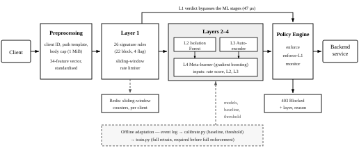

IEEE-format vector figure. Source of truth: architecture_ieee.svg

Fig. 1. MicroAPI Guard request pipeline. Every request is normalised into a 34-feature vector, screened by a deterministic signature and rate-limiting layer, and — only if it survives — scored by two unsupervised base detectors whose outputs a gradient-boosted meta-learner combines into the single blocking decision. A policy engine determines which layers may enforce. Dashed paths are off the request path.
% convert once, keeps vector quality (no rasterising):
% rsvg-convert -f pdf -o architecture_ieee.pdf architecture_ieee.svg
% inkscape architecture_ieee.svg --export-filename=architecture_ieee.pdf
\begin{figure*}[t]
\centering
\includegraphics[width=\textwidth]{architecture_ieee.pdf}
\caption{MicroAPI Guard request pipeline. Every request is normalised into a
34-feature vector, screened by a deterministic signature and rate-limiting
layer, and---only if it survives---scored by two unsupervised base detectors
whose outputs a gradient-boosted meta-learner combines into the single
blocking decision. Dashed paths are off the request path.}
\label{fig:architecture}
\end{figure*}
Drawn at 516 pt so it spans both columns (figure*). For a single-column
figure, the same content has to be re-laid-out vertically at 252 pt —
scaling this one down would drop the 6.5 pt labels below IEEE’s legibility floor.
The figure is pure vector, uses no fill that fails in grayscale, and carries no colour that
the caption depends on.
| # | Group | Features | Captures |
|---|---|---|---|
| 7 | Body | body_log_size, body_entropy, body_special_ratio, body_digit_ratio, body_upper_ratio, body_nonascii_ratio, body_size_z |
Payload size and character composition |
| 2 | Content | has_body, ct_json | Presence and declared type |
| 11 | Path | path_len, path_depth, path_max_seg, path_entropy, path_special_ratio, path_digit_ratio, path_numeric_seg_ratio, path_nonascii_ratio, path_decode_delta, path_dot_count, path_known |
URL structure, not identity; decode_delta catches encoding evasion |
| 5 | Query | q_param_count, q_max_val_len, q_total_len, q_special_ratio, q_decode_delta |
Injection payloads distort query shape |
| 1 | Behaviour | win_distinct_paths | Endpoint spread — scanning |
| 7 | Method | m_get, m_post, m_put, m_delete, m_patch, m_other, is_write | One-hot method plus write flag |
| 1 | L1 evidence | n_flags | Non-blocking rule hits, as evidence |
Route identity is never a feature. The path template keys the per-endpoint statistical baseline, but the raw path never reaches a model — feeding it in is what turned the earlier version into an endpoint lookup table.
| Mode | L1 (rules, rate) | L4 (ML verdict) | Used when |
|---|---|---|---|
monitor | logged | logged | Calibration window on a new backend |
enforce-l1 (default) | blocks | logged | Steady state for a fresh deployment |
enforce | blocks | blocks | After retraining on that deployment’s traffic |
| Metric | Mean [95% CI] | Basis |
|---|---|---|
| F1 | 0.957 [0.940, 0.976] | 10 seeds, session-grouped splits (models/validation.json) |
| Precision | 0.986 [0.982, 0.990] | |
| False positive rate | 0.0069 [0.0052, 0.0089] | |
| Zero-day recall | 0.794 [0.668, 0.914] | |
| Detection latency, ML path | 5.4 ms mean, 7.5 ms p95 | Single-threaded microbenchmark |
| Detection latency, L1 block | 47 µs |
Zero-day recall is measured on three attack families (cmdi, exfil,
ssti) withheld from every training and validation pool and present only in the
test split. Single-seed figures are not reportable.